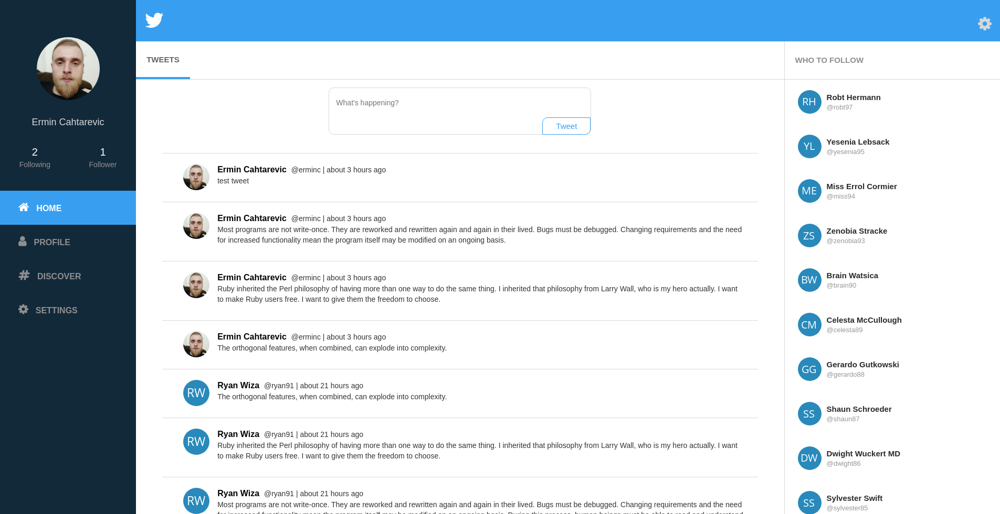
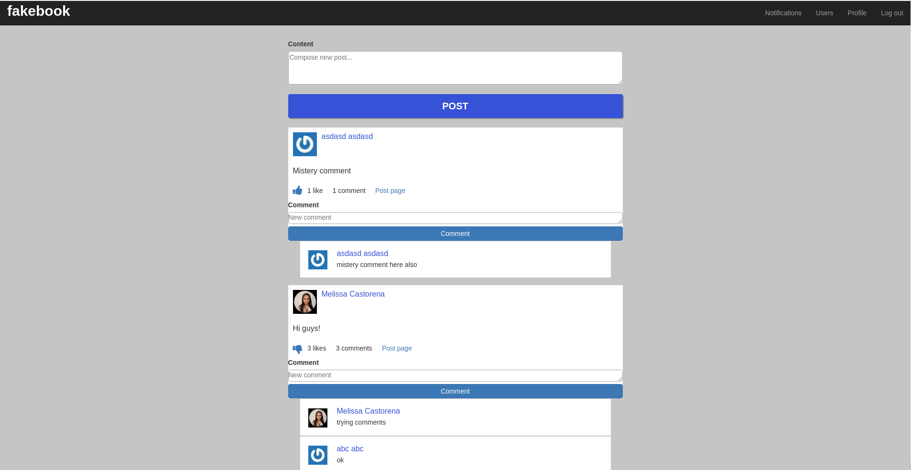
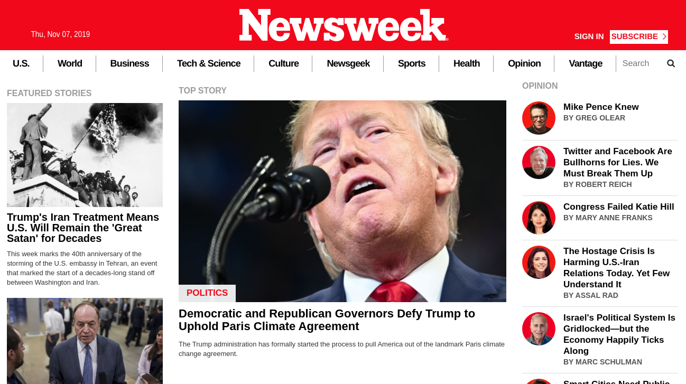

ERMIN CAHTAREVIC
Student Full-Stack Developer
CHECK MY WORKPORTFOLIO
Below you can see some projects I've been working on lately.
Twitter Redesign
Desktop Web App built with Ruby on Rails with the core features of Twitter implemented - tweets and followings. The app also features profile image and cover image upload, using an AWS S3 bucket for storage.
Ruby on Rails
Ruby
CSS3
PostgreSQL
AWS

Facebook Clone
(Collaborative project)
Desktop Web App built with Ruby on Rails with the core features of Facebook implemented - posts, likes, comments, friendships and OAuth with Facebook. While creating the project my coding partner and I mostly focused on the backend of the app - hence the poorly styled site.
Desktop Web App built with Ruby on Rails with the core features of Facebook implemented - posts, likes, comments, friendships and OAuth with Facebook. While creating the project my coding partner and I mostly focused on the backend of the app - hence the poorly styled site.
Ruby on Rails
Ruby
CSS3
Bootstrap
PostgreSQL

Newsweek Clone
Static Website built with Bootstrap. The project consisted of creating a fully responsive website using only bootstrap.
Bootstrap
CSS3
HTML


RECENT WORK
Some shots showing my latest work in progress
ABOUT ME
Open for remote positions. Full-Stack Developer with two years of experience. Worked as a machinist after dropping out of college. About two years ago I decided to switch careers and become a Software Developer. For one year I studied Web Development in my free time after work. Then, in Septemeber of 2019, I quit my job and enrolled in Microverse - Full-time online school for Software Developers.
Over the last months, I've improved my skills in Ruby, Ruby on Rails, React, Redux, HTML/CSS, SQL. So far completed 25+ projects.
One technical article written and published on Hackernoon, currently writing my next one.